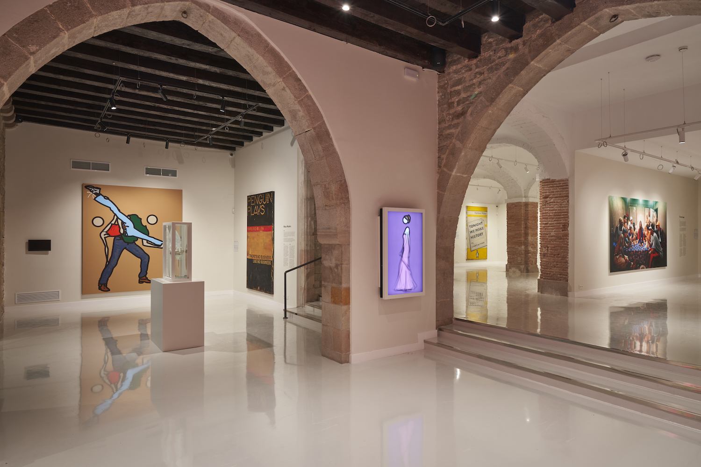
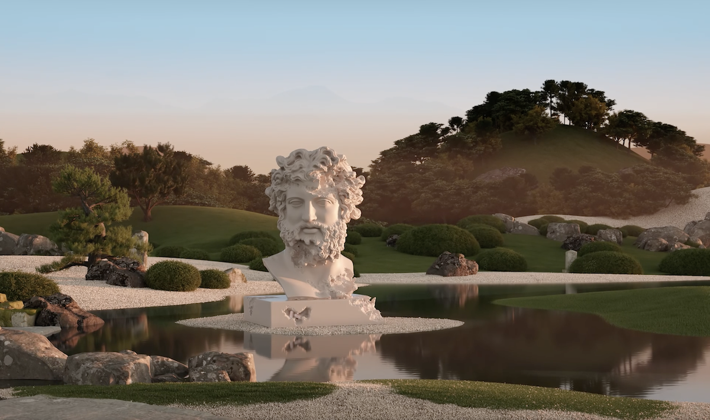
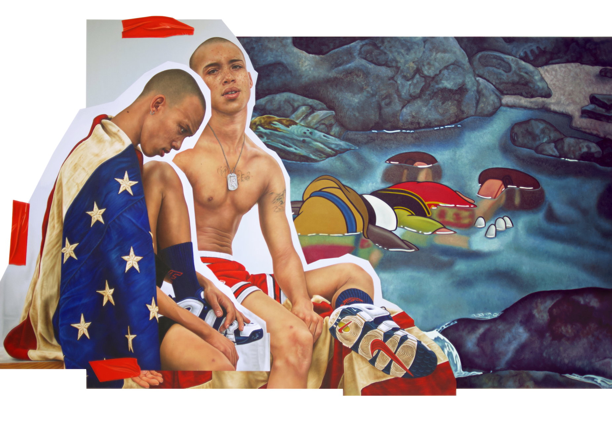

Barcelona
Moco Museum Barcelona
Moco Museum opent zijn tweede locatie in het 16e-eeuwse paleis in het centrum van Barcelona. Het Modern Contemporary (Moco) Museum herhaalt zijn inclusieve museummodel in Barcelona, Spanje. Op 16 oktober 2021 opent Moco Museum Barcelona zijn deuren voor het publiek, waarmee een nieuw hoofdstuk voor het onafhankelijke museum wordt gemarkeerd.
Na het succes in Amsterdam weerspiegelt Moco haar toewijding om iconische werken van internationaal bekende kunstenaars en rijzende sterren tentoon te stellen. Andy Warhol / Jean-Michel Basquiat / Banksy / Salvador Dalí / Damien Hirst / Keith Haring / KAWS / Hayden Kays / Yayoi Kusama / David LaChapelle / Takashi Murakami / Nick Thomm / teamLab / Les Fantômes / Studio Irma & meer!
Lees meerthe New Future
NFT tentoonstelling - Europa's eerste speciale tentoonstellingsruimte voor het NFT-fenomeen
10 december 2021 - 31 maart 2022
Europa’s eerste speciale tentoonstellingsruimte voor het NFT-fenomeen. Moco Museum brengt een selectie NFT’s samen van ’s werelds meest baanbrekende digitale kunstenaars. Deze zeldzame en unieke werken geven uitdrukking aan de toekomst van digitale kunst.
de Nieuwe Toekomst De tentoonstelling in Amsterdam, samengesteld door Moco Museum, bestaat uit twaalf NFT-kunstwerken van de anonieme verzamelaar 33. Als een van de grootste NFT-verzamelaars ter wereld heeft 33 meer dan 1.000 NFT’s. De collectie omvat werken van kunstenaars als Beeple, Andrés Reisinger, WhIsBe, Mad Dog Jones en FEWOCiOUS.
Read moreTHE KID
The Future Is Old
19 November -
MOCO Museum heeft de première van de eerste Nederlandse solotentoonstelling van de Internationale hedendaagse kunstenaar THE KID, waarbij hedendaagse kunst haar licht werpt op humanisme in de sociale crisis en het democratisch verval van onze 21e eeuw!
Een tentoonstelling die grenzen zal verleggen, medemenselijkheid wakker zal maken en het Museumplein in Amsterdam op zal schudden. In zijn tentoonstelling van november aanstaande zet MOCO Museum de Internationale hedendaagse kunstenaar THE KID in de schijnwerpers. MOCO en THE KID treden gezamenlijk op als curator van de eerste soloshow in Nederland – The Future is Old.
Read more